Update 1
This week I learned about chemical engineering and how it is used, studied, and how its important. We practiced some basic chemical engineering by making ooblek with cornstarch and water, we observed it as well like how it melts when left alone and hardens when copressed. We learned about the fields you could work in and what exactly you'd do. Along with the aspects of
Update 2
This week was an eventful week we had started with a base model of our mousetrap car on tinkerkad tp get an idea on how it's supposed to roll the farthest. So far I believe that our car is going well we have the base idea of it and all we are continuing to imporve it we have decided to make the rod and the point from the wheels to the mousetrap the same length, although it has less power it is more efficient and we believe that tradeoff is worth it. Next week I plan to finish my tinkercad and start preparing the materials for the build that I will start hopefully around Wednsday or Thursday.
Update 3
Last week I finsihed my tinkerkad around tuesday and for the rest of the week I had started to work on my car and maneged to complete the wheels, body, and axles for the cars. My goal this week is to finish my car and be able to test and make modifications to it next week. This weekend I spent it with my grandma watching thr gramnys.
Update 4
This week I fisnished my first car and had extra time to start my second car, the base model has been done but there is still lots of work to do. I have to make a longer string and reduce the resistent inbetween the wheels and the straw holding it.
Update 5
My car was a 4 wheeled car with a thin body supportted with a wooden rod so the cardboard body doesn't fold in itself with a moustrap in the center to work as a lever to pull the axle therefor pulling the wheels. It performed rather well before the pin fell out but was still partly functional, it averaged around 45 feet before the pin fell out. The furthest distance of our first car was between 14 feet and the furthest distance of our second car was 47 feet. The difference between our cars was amount of resistance in between the wheels whci was stopping the wheels from rotating smoothly and wheel straightness which was adding curve to the car. If I was to make a 3rd car I would make the body, string and rod longer for longer distances, because with my second car it worked flawlessly but would have much greater distances if it was longer.
Update 6
The current project i'm working on is an egg drop from 3 stories and needs to not crack or break. We are trying to slow down the egg im mid air and have a spring mechanism so it doesn't just hit the floor full force but releases the force once it comes in contact. Im scared it tips over mid air and lands the wrong way allowing the gg to break. The weakest part of out design is the trash bag, it may rip and if so it will not go well.
Update 7
My egg drop had a very simplistic idea, it was a box with cotton balls inside to surrpress the impact from the fall to the egg. With a parachute to slow the descent for maximun safety. During Spring Break I will stay home and enjoy time with my family and eat food and gain 10 pounds at least.
Update 8
The new project we have started is to create a boat that will in some way be able to float 500 cm across a drain pipe. We are attemting to use wind power to power our boat, so far we have 2 ideas, one is to train ourselves to be able to use bigger breaths, or if we are able to use 2 power sources we will attach a motor to the back and use it as a fan to push wind into our sail. I expect that this will work but wont be hte fastest and we are going to focus on controlling it so it doesn't tip over and sink.
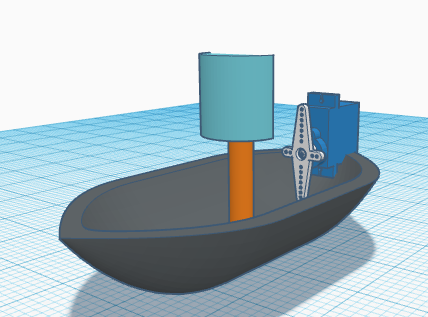
I dont have any pictures from spring break but my favorite part was going to see Dune 2. I am hoping ot end this school year with 4 A's and 3 B's which will be hard because I am in advanced courses and language classes.
Update 9
We were tasked to make a boat using limited resources to cross a 500cm gutter filled with water. Our project did very well, we had the second best score. We could've started it off a little farther we placed it a bit too far away. My favorite part of the class is the shark tank and mousetrap project, I had hella fun building and planning those well not really planning but the part where we get to build and test our projects. My least favorite was the math we had to do and the calculating to get the right measurements. I plan to do nothing for this weekend.
Update 10
We have to build a boat that can fit 2 people at be rowed across a pool and bakc without sinking. I am excited to get to test this and hopefully be the fastest team. The challenge we did last week wat to build the longest bridge that can hold itself up. I am looking foward to completely forgetting everything I have learned once school ends.
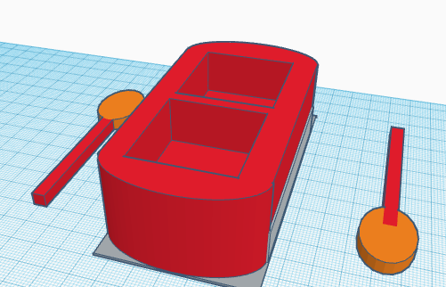
Update 11
In the last 2 weeks we have finished our tinkerkad, made some adjustments to it, and afterwards we assembled the 2 pieces of our bases and addded 3 out of our 4 wallls. Some challenegs I see for out boat is weight and time, out boat may be unbalanced and it could soak through the cardboard if we take too long. I'm most excited to actual test the boat as we are going to have the shortest time. I do not car for my sterotype as I relate to all of them but do not care.
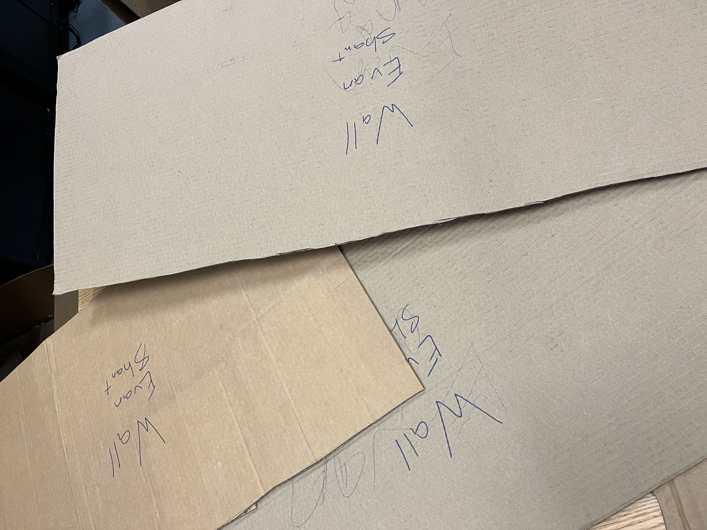
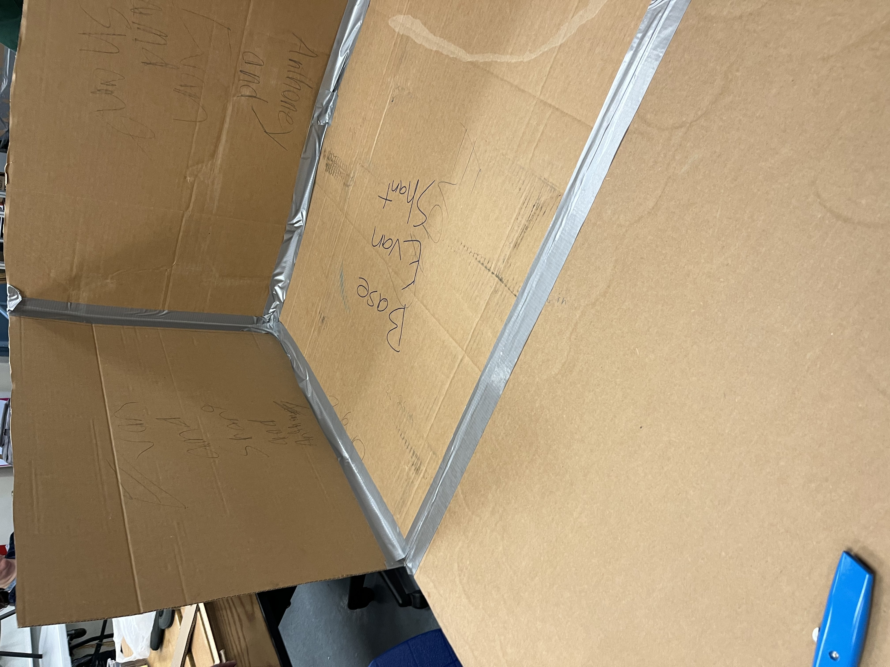
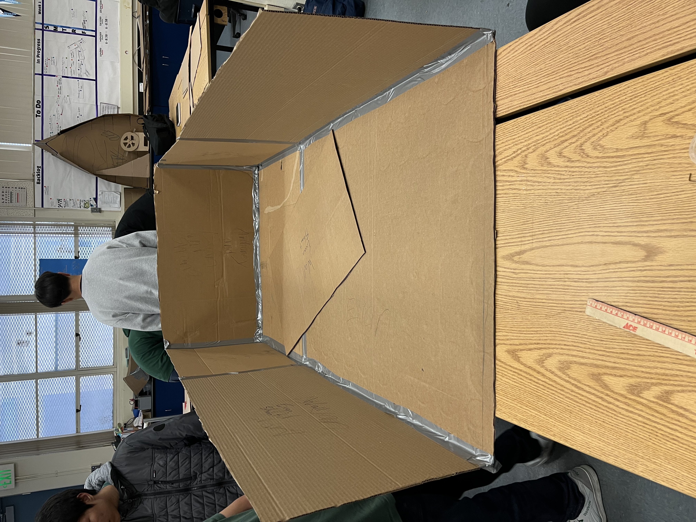
Update 12
Well in the last week we had managed for our walls to fall down twice and I managed to put my foot through the boat. This week I am going to place some supports and cut out arm holes along with fix any upcoming problems we face. I am concerned of holes, leaks, and it not being able to support the weight of 2 people. APPLE JUICE FOREVER, NOT ONLY IS IT THE HEALTHIER FRUIT IT HAS 0 PULP WHATSOEVER AND YOU MIGHT BE SAYING THERES ALWAYS NO PULP ORANGE JUICE, NO!!!! BECAUSE THATS EVEN GROSSER THAN NORMAL ORANGE JUICE!! AND IF U STILL DISAGREE I WILL REMOVE YOUR FAMILY FROM THE FACE OF THE EARTH.
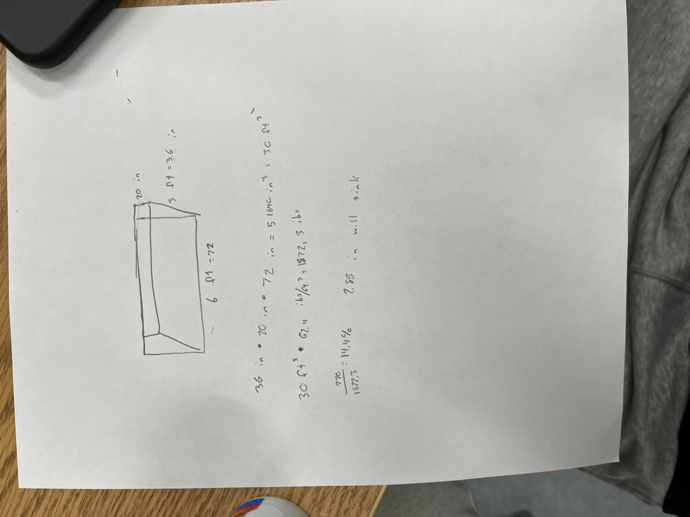
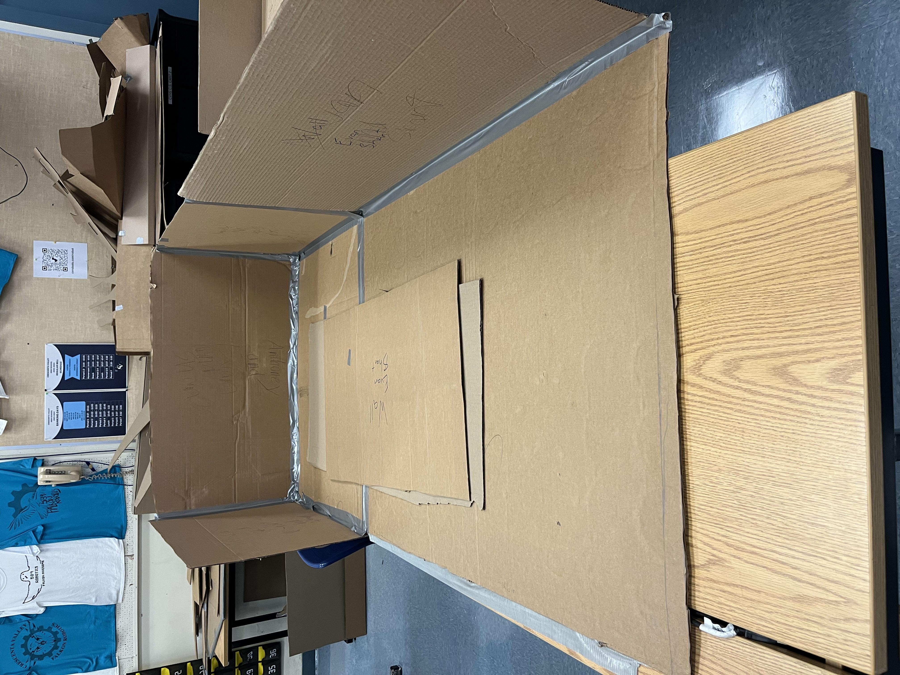
Update 13
With our boat we have pretty much finished it but in the past week we have made the paddles with consist of 3 paddles ducktaped together to create 1 and we did it twice. Currently we have nothing else to do with our boat. This mothers day my mother didn't feel like going out to people so she decided she was gonna stay home cook, sunbath, and relax and me, my father, and 2 sisters went to my aunts house for a little while and came back and spent the rest of the day with my mom.
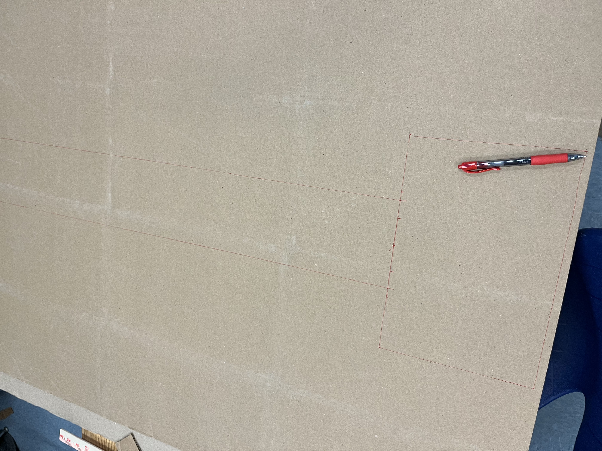
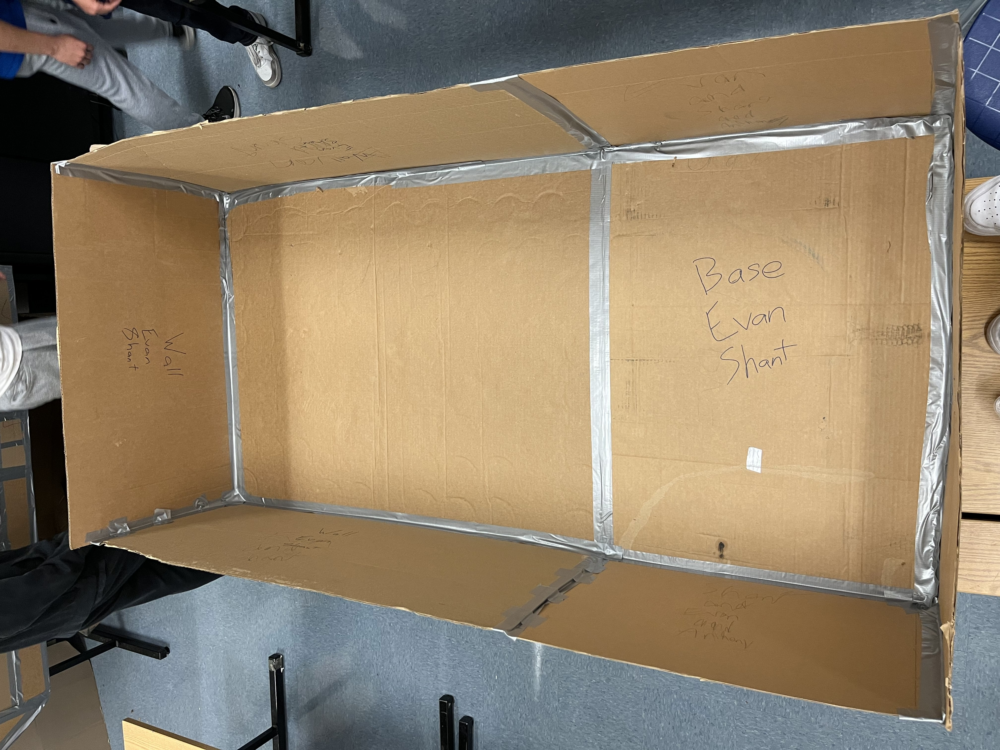
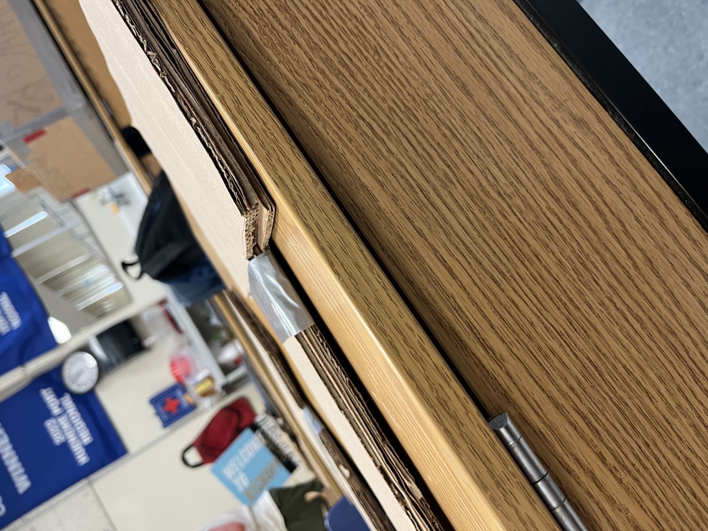
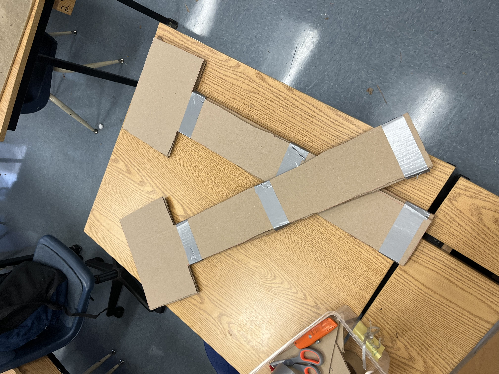
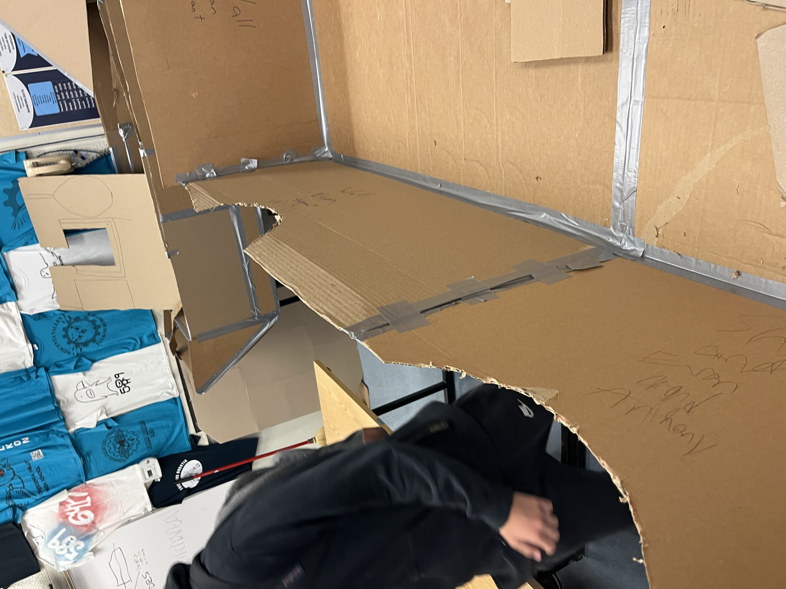


 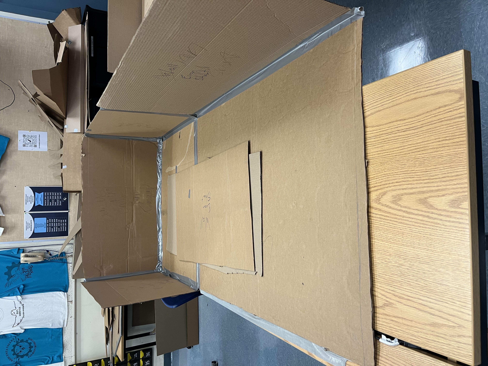
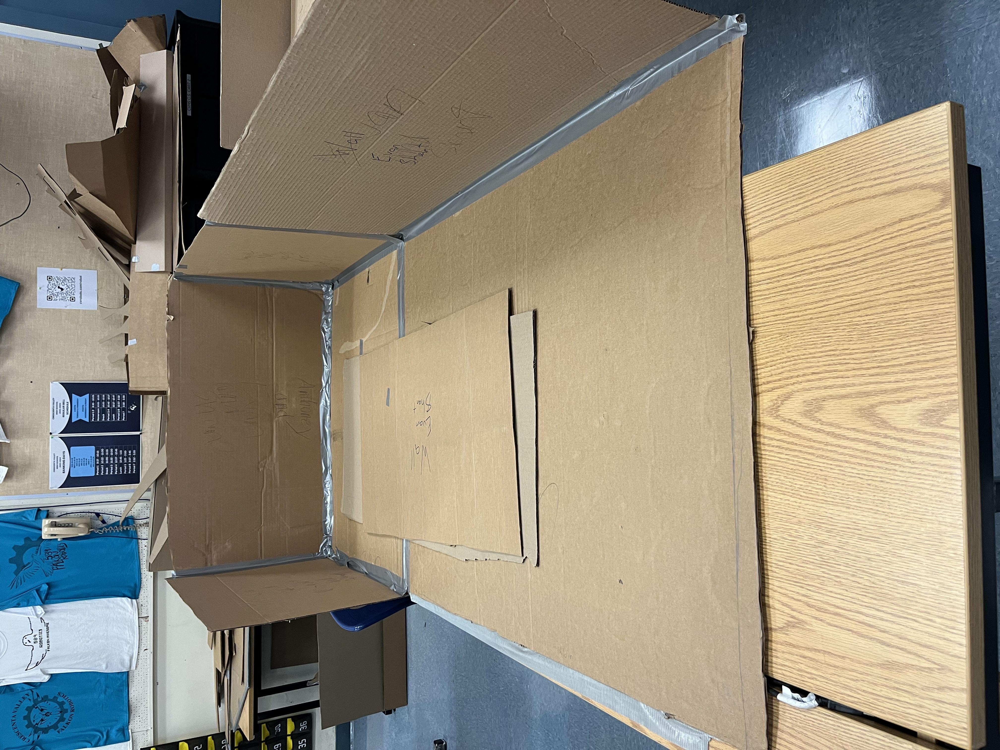